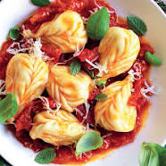

Culurgiones Sardi
I culurgiones sono un piatto tipico della Sardegna, in particolare dell'Ogliastra, zona centro orientale dell'isola. Si tratta di un tipo di pasta ripiena che nasce come un piatto povero, tipico della cultura agropastorale.
I culurgiones sono un piatto tipico della Sardegna, in particolare dell'Ogliastra, zona centro orientale dell'isola. Si tratta di un tipo di pasta ripiena che nasce come un piatto povero, tipico della cultura agropastorale.
La Fregola con arselle (Fregula cun cocciula) è un primo piatto di mare tipico della cucina sarda . Realizzato con le vongole chiamate appunto “arselle” in Sardegna cucinate in un sughetto saporito di pomodoro, aglio, vino bianco, prezzemolo fresco; dentro cui si cuoce lentamente la fregola : un tipo di pasta a forma di palline a base di semola. Risottandosi si ammorbisce, impregnandosi di tutto il sapore e profumo delle vongole fresche! Il risultato è una simil zuppa avvolgente ma allo stesso tempo cremosa dalla bontà unica!
Il porceddu è una ricetta classica della cucina sarda, quasi un simbolo di questa isola di pastori, agricoltori e terre incontaminate. Per cucinare bene il porceddu sardo è importante scegliere bene la carne, ossia un maialino da latte, e cuocerla su una buona brace, per far sì che si formi la crosticina croccante in superficie ma all’interno rimanga tenero e invitante. Anche se molti marinano la carne o la farciscono con erbe e aromi, il gustoso maialino della cucina sarda cotto in questo modo non ha bisogno di grandi aggiunte durante la fase di cottura: saranno i suoi succhi interni a rendere la carne saporita, e voi potrete condirlo a fine cottura con i caratteristici rametti di mirto.